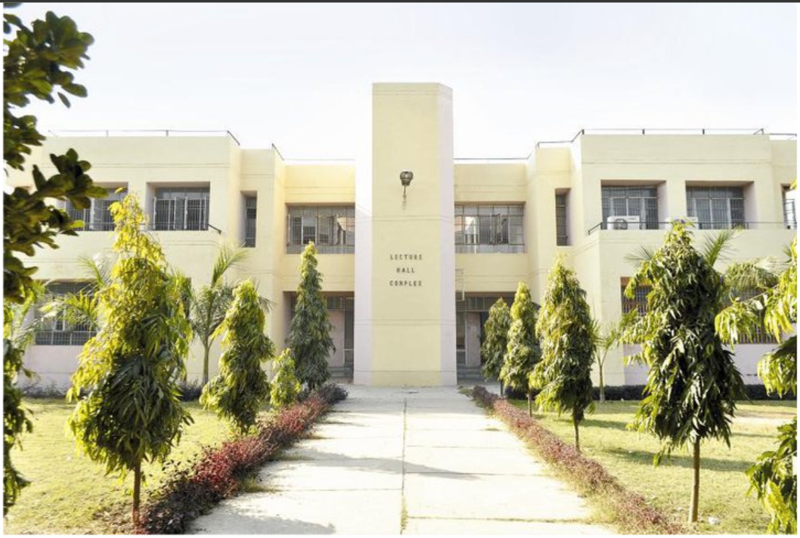

Motilal Nehru National Institute of Technology Allahabad, Prayagraj (MNNIT) is an Institute with total commitment to quality and excellence in academic pursuits. It was established as one of the seventeen Regional Engineering Colleges of India in the year 1961 as a joint enterprise of Government of India and Government of Uttar Pradesh, and was an associated college of University of Allahabad, which is the third oldest university in India.

For a short duration of two years (2000-2002), the Institute was affiliated to U.P. Technical University. With over 45 years of experience and achievements in the field of technical education, having traversed a long way, on June 26, 2002 MNREC was transformed into National Institute of Technology and Deemed University fully funded by Government of India. With the enactment of National Institutes of Technology Act-2007(29 to 2007), the Institute has been granted the status of institution of national importance w.e.f. 15.08.2007.
The Institute had begun with offering Bachelor Degree Programmes in Civil, Electrical and Mechanical Engineering. It was the first in the country to start an undergraduate programme in Computer Science & Engineering in 1976-77. Subsequently, in the year 1982-83 undergraduate programmes in Electronics Engineering and Production & Industrial Engineering were started.The first Master’s Programme of the Institute was introduced by the Mechanical Engineering Department in the year 1966. In all other Engineering Departments, Master's Programmes were introduced in the 1970-71. To add a new dimension to itself the Institute established School of Management studies in 1996, which offers a two year / four semester post graduate degree programme in Management (MBA).
The Institute now offers nine B.Tech., nineteen M.Tech. Degree Programmes (including part-time), MCA, MBA, M.Sc. (Mathematics and Scientific Computing) and Master of Social work (M.S.W.) programmes and also registers candidates for the Ph.D. degree. The Institute has been recognized by the Government of India as one of the centres for the Quality Improvement Programme for M.Tech. and Ph.D.The Institute has a very progressive policy towards extending all possible facilities to its faculty members to acquire higher degrees and receive advanced training. As a result, majority of the faculty members possess Ph.D. degrees. The entire campus is networked with 94 Mbps lease line.